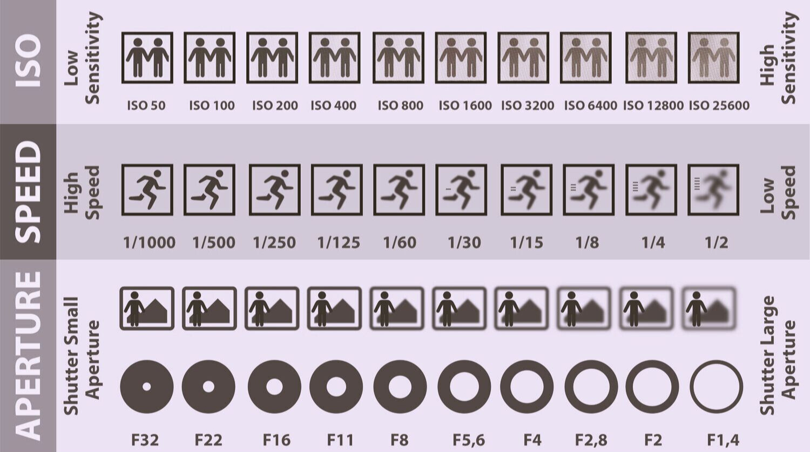
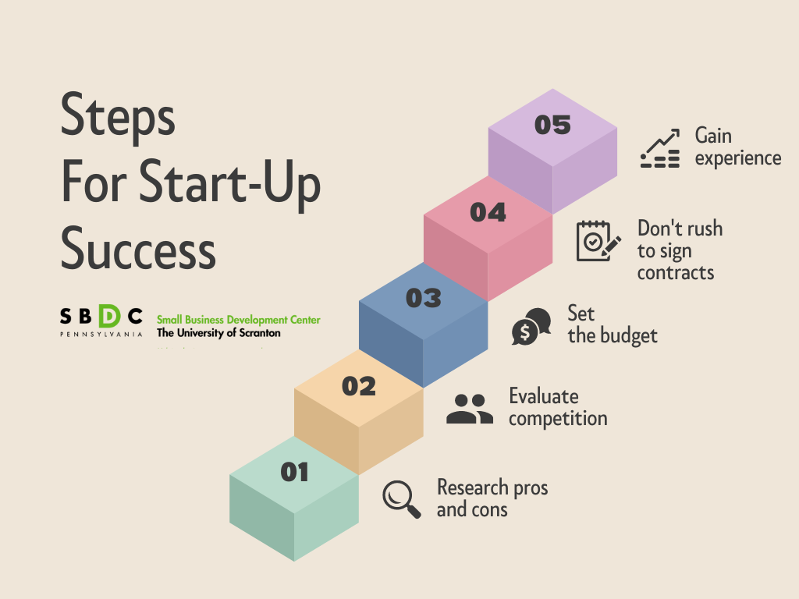

There are a couple of super important things to know when starting photography:
- There's a technical learning curve
- The entry cost can be high
- It requires a some of perseverance
- You might be nudged out of your comfort zone
Digital photography demands a deep understanding of technical concepts such as aperture, shutter speed, and ISO, all of which interact in complex ways to determine the final image. The initial investment can be significant, with the cost of a camera body, multiple lenses, and essential accessories like tripods and lighting equipment quickly adding up. Moreover, the learning curve extends beyond the camera itself; mastering post-processing software like Adobe Lightroom or Photoshop is crucial for achieving professional-quality results, requiring hours of practice and a keen eye for detail. This combination of technical complexity, financial commitment, and the continuous need for learning makes the journey into digital photography a challenging but ultimately rewarding endeavor. In addition to all of this, you typically have to travel a little or interact with clients more than you would be used to otherwise, so be ready to step out of your comfort zone a little if you want to get better at photography. However, the final skill is extremely useful in multiple scenarios, including a job or side hustle, along with general knowledge and skills.

Starting a photography business is a grueling journey that extends far beyond the creative act of taking a picture. The most significant hurdle is a saturated and highly competitive market, where the barrier to entry seems low, but the path to a sustainable income is incredibly steep. Aspiring photographers must not only master their craft but also become savvy entrepreneurs, handling everything from marketing, branding, and social media management to financial planning, client communication, and legal matters like contracts and copyright. Many beginners struggle with setting realistic pricing, often undervaluing their time and work in a desperate attempt to secure clients, which can devalue the entire industry. The "hustle" is relentless, with photographers often working long hours late into the night editing photos and responding to emails after a full day of shooting. It's an emotionally taxing career as well, with the constant fear of equipment failure, the pressure of meeting high client expectations, and the inevitable sting of rejection. The journey is a test of perseverance, requiring a deep passion for the art form to overcome the financial instability and operational complexities that define the early years of a photography business.
